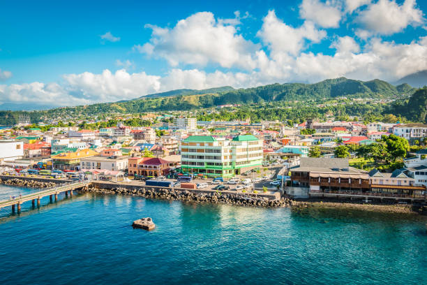

Building Dreams in the Nature Island
Premium construction services tailored to Dominica’s unique beauty and terrain. From coastal villas to mountain retreats, we build with integrity and excellence.
View Our WorkAbout Us

Your Trusted Local Builder
With years of experience in Dominica’s unique landscape, we understand the intricacies of building on the Nature Island. Our team blends traditional craftsmanship with modern construction techniques to ensure every project stands the test of time.
We specialize in residential homes, commercial buildings, and sustainable renovations that respect the natural environment.
Work With UsWhy Choose Us
Local Expertise
Deep knowledge of Dominica’s building codes and environmental conditions.
Quality Materials
We source only the best materials to ensure durability and aesthetic appeal.
Timely Delivery
We respect your time and budget, delivering projects as promised.